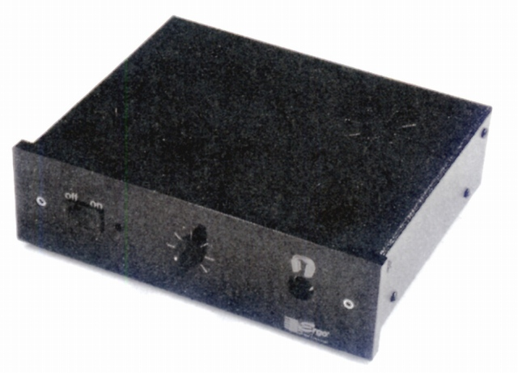

AMP1

■価格 55,000円■型式 ステレオヘッドフォンアンプ■周波数特性 20-20,000Hz±1dB■入力インピーダンス 22kΩ■最大出力 4W■入力端子 RCA1系統■電源 100V、AC50,60Hz、ACアダプター付属 ■サイズ 70H×200W×180D�o■発売 2000年頃■販売終了 ■備考 背面にA.T.M用端子あり。パラレルアウト端子あり。左右独立感度調整可。
エルゴのインデックスへ